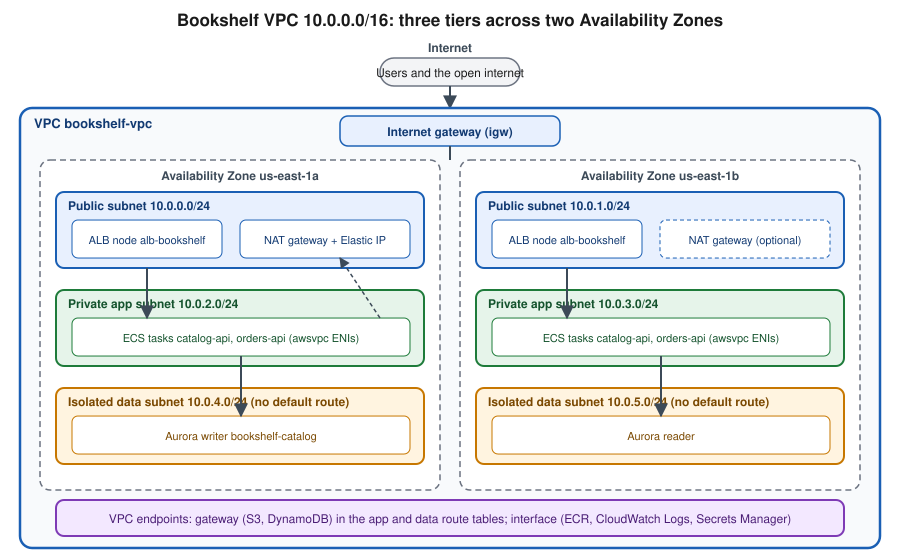

VPC Networking
|
This content was generated with the assistance of AI and should be verified against the official documentation before being relied on in production. |
Commands and behaviour on this page are current for AWS CLI v2 (2.37 line) and the Amazon VPC User Guide as checked on
2026-10-01; re-verify against aws --version and the linked reference pages before relying on them in a pipeline,
because networking features (regional NAT gateways, VPC Block Public Access, public IPv4 pricing) have changed
quickly in recent years. Examples use us-east-1 and the placeholder account ID 111122223333; both are
stand-ins for your own values, and every ID such as vpc-0example is a placeholder.
A Virtual Private Cloud (VPC) is your own logically isolated virtual network inside one AWS Region. Every Bookshelf
workload that runs in your account — the ECS tasks of catalog-api and orders-api, the alb-bookshelf load
balancer, the Aurora cluster bookshelf-catalog, the EKS cluster, Lambda functions that need private resources — lives in or attaches to a VPC, so the network is the first thing to design and the hardest to change later. This page
covers the building blocks, how traffic flows between them, how to keep private traffic off the internet (and off the
NAT gateway bill), how to connect VPCs to each other, how to troubleshoot with Flow Logs, and a runnable
CloudFormation template for the Bookshelf network. Name resolution and certificates are on
Route 53, DNS and ACM Certificates; load balancers and gateways in front of the subnets on
Load Balancers and Gateways; VPN and Direct Connect on
VPN and Hybrid Connectivity. For the Azure counterpart see Virtual Networks.
The pieces of a VPC
| Component | What it does |
|---|---|
VPC |
The network boundary. You give it one or more IPv4 CIDR blocks (and optionally IPv6) at creation; the primary IPv4 block can be between /16 and /28. Instances inside can reach each other by private IP through the implicit local route. |
Subnet |
A range of the VPC CIDR inside one Availability Zone. Subnets are what you place instances, tasks, load balancer nodes and database nodes in. A subnet cannot span AZs, so a highly available design always uses at least two. |
Route table |
A list of destination CIDR to target rules, associated with one or more subnets. The route table, not a flag on the subnet, decides whether a subnet is public or private. |
Internet gateway (IGW) |
A horizontally scaled gateway that connects the VPC to the internet. It performs the one-to-one mapping between a private IPv4 address and its public IPv4 or Elastic IP address. There is no charge for the gateway itself. |
Egress-only internet gateway |
The IPv6 equivalent of "outbound only": instances can start connections to the internet over IPv6, but the internet cannot start connections to them. |
NAT gateway |
A managed service that lets resources in private subnets start outbound connections (package downloads, third-party APIs) without being reachable from the internet. |
Security group |
A stateful firewall attached to a network interface (ENI). |
Network ACL |
A stateless firewall attached to a subnet. |
VPC endpoint |
A private path from the VPC to an AWS service or to a service published through PrivateLink, without an IGW, NAT gateway or public IP. |
Elastic network interface (ENI) |
The virtual network card that gets a private IP. EC2 instances, |
CIDR planning and subnets
Pick the VPC CIDR with growth and connectivity in mind. A /16 in the RFC 1918 ranges (10.0.0.0/8, 172.16.0.0/12,
192.168.0.0/16) is the usual starting point for a workload VPC; peering, Transit Gateway and VPN all require that
the CIDRs of the connected networks do not overlap, and overlapping ranges cannot be fixed without rebuilding.
AWS reserves five addresses in every subnet (the network address, the VPC router, the DNS resolver, one for future
use and the broadcast address), so a /28 yields 11 usable addresses. Container and Kubernetes workloads can consume many addresses
(one ENI-backed IP per awsvpc task, one per pod with the VPC CNI), so give the application subnets generous ranges
such as /20 or /24 rather than /28. You can add secondary CIDR blocks later, and Amazon VPC IP Address Manager
(IPAM) can allocate non-overlapping ranges across accounts and Regions from a pool.
Bookshelf uses 10.0.0.0/16 and six /24 subnets in two Availability Zones:
| Tier | Subnet (AZ a / AZ b) | Default route | What lives there |
|---|---|---|---|
Public |
|
Internet gateway |
ALB nodes |
Private application |
|
NAT gateway |
ECS tasks |
Isolated data |
|
None (only the local route) |
Aurora |

Public, private and isolated subnets
A subnet is public when its route table has a route to an internet gateway for 0.0.0.0/0; the resources in it
additionally need a public IPv4 or Elastic IP address (or an IPv6 address) to be reachable. A private subnet has no
route to the IGW; if it has a default route to a NAT gateway its resources can reach the internet outbound only. An
isolated subnet has neither, so its resources can talk only inside the VPC and to AWS services through VPC
endpoints. These are conventions, not API flags: the console’s "Auto-assign public IPv4 address" setting on a subnet
only controls whether new ENIs get a public address by default.
IPv6 and dual-stack
You can associate an Amazon-provided /56 IPv6 CIDR (or a block you bring) with a VPC; each subnet then gets a /64. IPv6 addresses are globally unique and public-capable, so there is no NAT for IPv6: reachability is decided by routes and security rules alone. Use an egress-only internet gateway for outbound-only IPv6 from private subnets. A dual-stack subnet supports both families; an IPv6-only subnet is possible for supported services. IPv6 avoids the public IPv4 charge described below, which is the main practical reason to adopt it for internet-facing endpoints. Application Load Balancers and CloudFront both support dual-stack, so Bookshelf’s front door can serve IPv6 users without any change to the tasks behind it.
Routing and internet access
Every subnet is associated with exactly one route table (the VPC’s main route table unless you associate another
one), and a route table can serve many subnets. Routing is most-specific-prefix first, and the local route for the VPC CIDR cannot be removed or overridden
by a less specific route. Common route targets:
-
an internet gateway (
igw-…) for public subnets; -
a NAT gateway (
nat-…) for private subnets that need outbound access; -
a gateway endpoint (added automatically as a prefix-list route when you associate the table);
-
a VPC peering connection, transit gateway or virtual private gateway for private connectivity;
-
an egress-only internet gateway for IPv6.
NAT gateways
A NAT gateway translates the private source address of outbound traffic to its own address and returns the replies. Two flavours exist:
-
A zonal NAT gateway lives in one public subnet of one AZ and uses an Elastic IP. For fault tolerance you create one per AZ and point each AZ’s private route table at its local gateway; a single NAT gateway is a single-AZ dependency, and traffic from other AZs to it is billed as cross-AZ data transfer.
-
A regional NAT gateway, introduced in November 2025 (announcement), is a single gateway at the VPC level that spans the Availability Zones where your workloads run, scales its capacity automatically and does not need a public subnet. It replaces the "one NAT gateway per AZ, plus public subnets" pattern. Check the NAT gateway page linked below for the current creation parameters before adopting it. At launch it was available in all commercial Regions, but not in the AWS GovCloud (US) or China Regions.
NAT gateways are among the largest hidden line items on a small AWS bill. Pricing is made of an hourly charge for every NAT gateway that exists (charged whether or not it carries traffic) plus a per-GB data-processing charge on all traffic that passes through, in addition to normal data transfer, and public IPv4 charges for the Elastic IP. Pulling container images from ECR, writing logs, reading secrets and calling S3 or DynamoDB through a NAT gateway all pay the per-GB fee even though the destinations are AWS services; the fix is to use VPC endpoints (next section). Check the Amazon VPC pricing page for the current rates; this page deliberately quotes none. A common cost-saving choice for non-production environments is one NAT gateway for the whole VPC, as the Bookshelf template does, accepting a single-AZ dependency; production usually runs one per AZ or a regional gateway.
Traffic filtering: security groups vs. network ACLs
| Aspect | Security group | Network ACL |
|---|---|---|
Attached to |
An ENI (instance, task, database, endpoint, load balancer node). |
A subnet; applies to every ENI in it. |
State |
Stateful: a reply to an allowed request is allowed automatically, in both directions. |
Stateless: inbound and outbound rules are evaluated independently, so replies on ephemeral ports (1024-65535) need their own rule. |
Rule types |
Allow only. Everything not allowed is denied. |
Allow and deny, evaluated in ascending rule-number order; the first match wins; a final |
Sources and destinations |
CIDRs, prefix lists and other security groups (by ID). |
CIDRs only. |
Default |
New groups deny all inbound and allow all outbound. |
The default NACL allows everything; a custom NACL denies everything until you add rules. |
Typical use |
The main control: tier-to-tier rules, for example "catalog-api accepts 8080 from the ALB group only". |
A coarse backstop: block a known-bad CIDR, or enforce that the data subnets accept only the app subnets. |
The practical pattern for Bookshelf is to express the tiers as security-group references rather than CIDRs: the ALB group allows 80 and 443 from the internet, the application group allows 8080 only from the ALB group, and the database group allows 5432 only from the application group. Tasks can then scale, move subnets or change IPs without touching a rule, and nothing in the data tier is reachable from anywhere except the app tier. Managed prefix lists (AWS-maintained for services such as S3 and CloudFront, or your own) let one rule cover many CIDRs and be updated in one place, which also keeps the per-group rule quota under control. Keep the default NACL for most workloads and add custom NACLs only where a subnet-level deny is a real requirement.
Private connectivity
VPC endpoints
A VPC endpoint connects the VPC to a supported service over the AWS network. There are two common types, with very different mechanics and cost:
| Aspect | Gateway endpoint | Interface endpoint (AWS PrivateLink) |
|---|---|---|
Services |
Amazon S3 and Amazon DynamoDB only. |
Most AWS services (ECR, CloudWatch Logs, Secrets Manager, SSM, STS, SQS, …), your own services, and partner services. |
How it works |
A route-table entry that points the service’s prefix list at the endpoint. |
One or more ENIs with private IPs in the subnets you choose, plus private DNS names that resolve to them. |
Security |
Endpoint policy (resource) and, on the S3/DynamoDB side, bucket or table policies that can require the endpoint. |
Endpoint policy plus a security group on the ENIs. |
Cost |
No hourly or data-processing charge. |
An hourly charge per endpoint per AZ plus a per-GB data-processing charge. |
Reachable from on premises or peered VPCs |
No. |
Yes, through the ENI addresses over VPN, Direct Connect or Transit Gateway. |
For Bookshelf the rule is: always create the S3 and DynamoDB gateway endpoints, since they are free and remove the
largest NAT consumers (S3 object access, ECR image layers are served from S3, and the Orders table). Add interface
endpoints for ECR (ecr.api and ecr.dkr), CloudWatch Logs, Secrets Manager and, for EKS, STS only when the traffic
volume or a no-internet requirement justifies the per-endpoint hourly cost; compare it with the NAT gateway
data-processing cost for the same traffic. Isolated subnets that must pull images need the two ECR endpoints plus the S3
gateway endpoint. An endpoint policy is a JSON document that limits what the endpoint can be used for. This
one allows the Bookshelf account’s principals to read only from the uploads bucket through the S3 gateway endpoint
(s3-endpoint-policy.json; replace the bucket name with your own):
{
"Version": "2012-10-17",
"Statement": [
{
"Sid": "AllowBookshelfUploadsRead",
"Effect": "Allow",
"Principal": "*",
"Action": ["s3:GetObject", "s3:ListBucket"],
"Resource": [
"arn:aws:s3:::bookshelf-uploads-111122223333",
"arn:aws:s3:::bookshelf-uploads-111122223333/*"
]
}
]
}Remember that ECR layers are stored in AWS-owned S3 buckets, so a restrictive S3 endpoint policy must also allow the
ECR layer buckets documented in the ECR VPC endpoint guide, or image pulls in isolated subnets fail. The S3 side of
the same idea (a bucket policy that requires aws:SourceVpce) is on
S3 Security and Static Hosting. See the
VPC endpoints and
gateway endpoints for Amazon S3 guides.
PrivateLink: publishing a service
AWS PrivateLink is the technology behind interface endpoints, and it also lets you expose your own service to
other VPCs and accounts without peering or route tables. The provider puts the service behind a Network Load Balancer
(or Gateway Load Balancer) and creates an endpoint service; consumers create an interface endpoint to it and see a
private IP in their own VPC. There is no CIDR overlap problem and consumers can reach only that service, not the
provider’s network. It is the right tool for SaaS-style, one-way access such as Bookshelf’s catalog-api being consumed by a partner account, or a
third-party database such as MongoDB Atlas, Neo4j Aura or Qdrant Cloud offered by Marketplace
(DocumentDB and MongoDB on AWS, Caching, Graph and Partner Databases).
VPC peering, Transit Gateway and friends
| Option | Model | Choose it when |
|---|---|---|
VPC peering |
A one-to-one connection between two VPCs (same or different account or Region). Non-transitive: if A peers with B and B with C, A cannot reach C. Routes must be added on both sides and CIDRs must not overlap. |
You connect a handful of VPCs and want the simplest, cheapest setup; there is no hourly gateway charge, only data transfer. |
Transit Gateway |
A regional router that attaches many VPCs, VPNs and Direct Connect gateways, with route tables for segmentation and inter-Region peering. Transitive. |
Many VPCs, shared services, central egress or inspection, or hybrid connectivity at scale; it has hourly per-attachment and per-GB charges. |
Cloud WAN |
A managed global network built on core network policies spanning Regions and on-premises sites. |
You need a policy-driven global backbone instead of managing many Transit Gateways yourself. |
PrivateLink |
One-way access to a single service through ENIs (see above). |
Overlapping CIDRs, or you want to expose only one service rather than the network. |
VPC Lattice |
A managed application-layer service network: services and resource gateways are registered, auth is enforced by IAM auth policies, and consumers in associated VPCs reach them by name regardless of CIDR. |
Service-to-service communication across VPCs and accounts where you prefer policy over route tables; it is also the AWS Gateway API controller’s service-to-service option on EKS. |
For a single-account Bookshelf only peering or nothing is needed; the multi-account layout in Accounts and Organizations typically adds a Transit Gateway for shared egress and VPNs.
Governance, addressing charges and protection
-
Public IPv4 charge. Since 1 February 2024, AWS charges an hourly fee for every public IPv4 address, whether it is attached to a running resource or idle, including Elastic IPs and the public addresses of load balancer nodes, NAT gateways and instances; only the AWS Free Tier allowance and a few exceptions are exempt. A public subnet with a public ALB and a zonal NAT gateway per AZ therefore carries several such charges. Inventory them with the VPC Public IP Insights in the console or with Cost Explorer, release unused Elastic IPs, put private resources behind private subnets and prefer IPv6 or CloudFront for public access. Check the current rate on the VPC pricing page.
-
VPC Block Public Access (BPA). An account- and Region-level guardrail that blocks internet traffic through IGWs and egress-only IGWs, in bidirectional or ingress-only mode, with exclusions for specific VPCs or subnets. Enable it in non-internet-facing accounts so a mistaken route or public IP cannot expose a workload.
-
Network firewalling. AWS Network Firewall (managed stateful and stateless inspection and domain filtering) and AWS Shield and AWS WAF (DDoS and Layer 7 protection, usually attached to CloudFront or the ALB) sit above the basic controls. They are mentioned here for orientation; they are not needed for the minimal Bookshelf network.
-
Quotas. Defaults include five VPCs per Region, 200 subnets per VPC, five NAT gateways per Availability Zone, a limited number of rules per security group and interface endpoints per VPC. Most are adjustable through Service Quotas; read the current values on the VPC quotas page before planning a large design.
Troubleshooting: Flow Logs and analyzers
VPC Flow Logs record accepted and rejected IP traffic (source, destination, ports, protocol, bytes, action) for a
VPC, a subnet or an ENI. They go to CloudWatch Logs, S3 or Data Firehose. Records are written in near real time
batches (aggregation interval 1 or 10 minutes) and do not capture the content of packets, DNS to the Amazon resolver, DHCP or instance
metadata traffic. They are the first tool for "why can’t A reach B": a REJECT for the destination port points to a
security group or NACL, no record at all points to routing, and an asymmetric pair of records points to a
stateless NACL missing the return rule. Flow logs are billed as log ingestion and storage in the destination service.
-
Reachability Analyzer checks, by static analysis of the configuration, whether a path between two endpoints (ENI, instance, IGW, endpoint, gateway) is reachable, and tells you which component blocks it, without sending packets.
-
Network Access Analyzer finds unintended network access paths, for example "anything reaching the database subnets from the internet", against scopes you define.
-
Security group and route views in the console show effective rules, and
aws ec2 describe-network-interfacesshows which groups an ENI has.
In the AWS Management Console
The VPC and more wizard is the fastest way to create the baseline.
-
Select the Region (top right) — all VPC resources are regional.
-
Open VPC → Your VPCs → Create VPC and choose VPC and more.
-
Set Name tag auto-generation to
bookshelf, IPv4 CIDR block to10.0.0.0/16, IPv6 CIDR block to No IPv6 (or the Amazon-provided block for dual-stack). -
Set Number of Availability Zones to 2, Public subnets to 2 and Private subnets to 2 (the wizard creates public and private tiers; add the isolated data subnets afterwards with Subnets → Create subnet).
-
Choose NAT gateways: None, In 1 AZ, or 1 per AZ (the console may also offer the regional option).
-
Choose VPC endpoints: S3 Gateway (and add a DynamoDB gateway endpoint later under Endpoints).
-
Leave Enable DNS hostnames and Enable DNS resolution on, then select Create VPC. The preview graph shows the subnet, route table and gateway relations before you commit.
-
Add interface endpoints under Endpoints → Create endpoint: choose the service (for example
com.amazonaws.us-east-1.ecr.dkr), the VPC, the application subnets, a security group that allows TCP 443 from the VPC CIDR, and keep Enable DNS name ticked. -
Turn on Flow Logs: select the VPC → Flow logs tab → Create flow log, choose All traffic and a destination.
You can run all of these from CloudShell, which already has the AWS CLI configured for the console’s current Region.
With the AWS CLI
Create the VPC, subnets and gateways (reference: create-vpc, create-subnet):
export AWS_REGION=us-east-1
VPC_ID=$(aws ec2 create-vpc --cidr-block 10.0.0.0/16 \
--tag-specifications 'ResourceType=vpc,Tags=[{Key=Name,Value=bookshelf-vpc}]' \
--query 'Vpc.VpcId' --output text)
aws ec2 modify-vpc-attribute --vpc-id "$VPC_ID" --enable-dns-hostnames '{"Value":true}'
AZ_A=$(aws ec2 describe-availability-zones --query 'AvailabilityZones[0].ZoneName' --output text)
AZ_B=$(aws ec2 describe-availability-zones --query 'AvailabilityZones[1].ZoneName' --output text)
PUB_A=$(aws ec2 create-subnet --vpc-id "$VPC_ID" --availability-zone "$AZ_A" --cidr-block 10.0.0.0/24 \
--query 'Subnet.SubnetId' --output text)
PUB_B=$(aws ec2 create-subnet --vpc-id "$VPC_ID" --availability-zone "$AZ_B" --cidr-block 10.0.1.0/24 \
--query 'Subnet.SubnetId' --output text)
APP_A=$(aws ec2 create-subnet --vpc-id "$VPC_ID" --availability-zone "$AZ_A" --cidr-block 10.0.2.0/24 \
--query 'Subnet.SubnetId' --output text)
APP_B=$(aws ec2 create-subnet --vpc-id "$VPC_ID" --availability-zone "$AZ_B" --cidr-block 10.0.3.0/24 \
--query 'Subnet.SubnetId' --output text)
DATA_A=$(aws ec2 create-subnet --vpc-id "$VPC_ID" --availability-zone "$AZ_A" --cidr-block 10.0.4.0/24 \
--query 'Subnet.SubnetId' --output text)
DATA_B=$(aws ec2 create-subnet --vpc-id "$VPC_ID" --availability-zone "$AZ_B" --cidr-block 10.0.5.0/24 \
--query 'Subnet.SubnetId' --output text)
IGW_ID=$(aws ec2 create-internet-gateway --query 'InternetGateway.InternetGatewayId' --output text)
aws ec2 attach-internet-gateway --internet-gateway-id "$IGW_ID" --vpc-id "$VPC_ID"Make the public subnets public with a route table that has a default route to the IGW (reference: create-route-table, create-route):
PUB_RT=$(aws ec2 create-route-table --vpc-id "$VPC_ID" --query 'RouteTable.RouteTableId' --output text)
aws ec2 create-route --route-table-id "$PUB_RT" --destination-cidr-block 0.0.0.0/0 --gateway-id "$IGW_ID"
aws ec2 associate-route-table --route-table-id "$PUB_RT" --subnet-id "$PUB_A"
aws ec2 associate-route-table --route-table-id "$PUB_RT" --subnet-id "$PUB_B"Add a NAT gateway in a public subnet and send the application subnets through it (reference: create-nat-gateway). The regional variant is selected with the command’s availability-mode option; see the reference for the current flags.
EIP_ALLOC=$(aws ec2 allocate-address --domain vpc --query 'AllocationId' --output text)
NAT_ID=$(aws ec2 create-nat-gateway --subnet-id "$PUB_A" --allocation-id "$EIP_ALLOC" \
--query 'NatGateway.NatGatewayId' --output text)
aws ec2 wait nat-gateway-available --nat-gateway-ids "$NAT_ID"
APP_RT=$(aws ec2 create-route-table --vpc-id "$VPC_ID" --query 'RouteTable.RouteTableId' --output text)
aws ec2 create-route --route-table-id "$APP_RT" --destination-cidr-block 0.0.0.0/0 --nat-gateway-id "$NAT_ID"
aws ec2 associate-route-table --route-table-id "$APP_RT" --subnet-id "$APP_A"
aws ec2 associate-route-table --route-table-id "$APP_RT" --subnet-id "$APP_B"
# Isolated tier: a route table with only the implicit local route
DATA_RT=$(aws ec2 create-route-table --vpc-id "$VPC_ID" --query 'RouteTable.RouteTableId' --output text)
aws ec2 associate-route-table --route-table-id "$DATA_RT" --subnet-id "$DATA_A"
aws ec2 associate-route-table --route-table-id "$DATA_RT" --subnet-id "$DATA_B"Create the security groups with tier-to-tier references (reference: create-security-group, authorize-security-group-ingress):
ALB_SG=$(aws ec2 create-security-group --group-name bookshelf-alb --description "Bookshelf ALB" \
--vpc-id "$VPC_ID" --query 'GroupId' --output text)
APP_SG=$(aws ec2 create-security-group --group-name bookshelf-app --description "Bookshelf tasks" \
--vpc-id "$VPC_ID" --query 'GroupId' --output text)
DB_SG=$(aws ec2 create-security-group --group-name bookshelf-db --description "Bookshelf Aurora" \
--vpc-id "$VPC_ID" --query 'GroupId' --output text)
aws ec2 authorize-security-group-ingress --group-id "$ALB_SG" --protocol tcp --port 443 --cidr 0.0.0.0/0
aws ec2 authorize-security-group-ingress --group-id "$APP_SG" --protocol tcp --port 8080 --source-group "$ALB_SG"
aws ec2 authorize-security-group-ingress --group-id "$DB_SG" --protocol tcp --port 5432 --source-group "$APP_SG"Create the gateway and interface endpoints (reference: create-vpc-endpoint):
aws ec2 create-vpc-endpoint --vpc-id "$VPC_ID" --vpc-endpoint-type Gateway \
--service-name "com.amazonaws.${AWS_REGION}.s3" --route-table-ids "$APP_RT" "$DATA_RT"
aws ec2 create-vpc-endpoint --vpc-id "$VPC_ID" --vpc-endpoint-type Gateway \
--service-name "com.amazonaws.${AWS_REGION}.dynamodb" --route-table-ids "$APP_RT"
ENDPOINT_SG=$(aws ec2 create-security-group --group-name bookshelf-endpoints \
--description "Interface endpoints" --vpc-id "$VPC_ID" --query 'GroupId' --output text)
aws ec2 authorize-security-group-ingress --group-id "$ENDPOINT_SG" --protocol tcp --port 443 --cidr 10.0.0.0/16
for SVC in ecr.api ecr.dkr logs secretsmanager; do
aws ec2 create-vpc-endpoint --vpc-id "$VPC_ID" --vpc-endpoint-type Interface \
--service-name "com.amazonaws.${AWS_REGION}.${SVC}" \
--subnet-ids "$APP_A" "$APP_B" --security-group-ids "$ENDPOINT_SG" --private-dns-enabled
doneTurn on Flow Logs for the VPC (reference:
create-flow-logs); the role must be
trusted by vpc-flow-logs.amazonaws.com and allowed to write to the log group:
aws logs create-log-group --log-group-name /bookshelf/vpc-flow-logs
aws ec2 create-flow-logs --resource-type VPC --resource-ids "$VPC_ID" --traffic-type ALL \
--log-destination-type cloud-watch-logs --log-group-name /bookshelf/vpc-flow-logs \
--deliver-logs-permission-arn arn:aws:iam::111122223333:role/bookshelf-flow-logsVerify and troubleshoot with the analyzers (reference: create-network-insights-path):
aws ec2 describe-subnets --filters "Name=vpc-id,Values=$VPC_ID" \
--query 'Subnets[].[SubnetId,AvailabilityZone,CidrBlock]' --output table
aws ec2 describe-route-tables --filters "Name=vpc-id,Values=$VPC_ID" \
--query 'RouteTables[].[RouteTableId,Routes[].DestinationCidrBlock]'
PATH_ID=$(aws ec2 create-network-insights-path --source "$IGW_ID" --destination "$ALB_ENI" \
--protocol tcp --destination-port 443 --query 'NetworkInsightsPath.NetworkInsightsPathId' --output text)
aws ec2 start-network-insights-analysis --network-insights-path-id "$PATH_ID"Here $ALB_ENI is the ID of one of the load balancer’s network interfaces from aws ec2 describe-network-interfaces.
Bookshelf VPC with CloudFormation
The template below recreates the console and CLI steps as one stack: the VPC, two public, two private application and
two isolated data subnets across two AZs, the internet gateway, one zonal NAT gateway (in the first AZ, to limit
cost), route tables, three tier security groups, the S3 and DynamoDB gateway endpoints, the interface endpoints for
ECR, CloudWatch Logs and Secrets Manager, and VPC Flow Logs to CloudWatch Logs with its role. It is a fuller version of the
network in the baseline on Infrastructure as Code; use one or the other for a given VPC. Because it creates an IAM role it needs
CAPABILITY_IAM, and because it contains a NAT gateway, an Elastic IP and four interface endpoints it incurs hourly
charges while deployed. Save it as bookshelf-network.yaml.
AWSTemplateFormatVersion: "2010-09-09"
Description: Bookshelf network - three-tier VPC, NAT gateway, endpoints and Flow Logs
Parameters:
EnvironmentName:
Type: String
Default: bookshelf
VpcCidr:
Type: String
Default: 10.0.0.0/16
LogRetentionDays:
Type: Number
Default: 14
Resources:
Vpc:
Type: AWS::EC2::VPC
Properties:
CidrBlock: !Ref VpcCidr
EnableDnsSupport: true
EnableDnsHostnames: true
Tags:
- Key: Name
Value: !Sub "${EnvironmentName}-vpc"
InternetGateway:
Type: AWS::EC2::InternetGateway
GatewayAttachment:
Type: AWS::EC2::VPCGatewayAttachment
Properties:
VpcId: !Ref Vpc
InternetGatewayId: !Ref InternetGateway
PublicSubnetA:
Type: AWS::EC2::Subnet
Properties:
VpcId: !Ref Vpc
AvailabilityZone: !Select [0, !GetAZs ""]
CidrBlock: !Select [0, !Cidr [!Ref VpcCidr, 6, 8]]
Tags: [{Key: Name, Value: !Sub "${EnvironmentName}-public-a"}]
PublicSubnetB:
Type: AWS::EC2::Subnet
Properties:
VpcId: !Ref Vpc
AvailabilityZone: !Select [1, !GetAZs ""]
CidrBlock: !Select [1, !Cidr [!Ref VpcCidr, 6, 8]]
Tags: [{Key: Name, Value: !Sub "${EnvironmentName}-public-b"}]
AppSubnetA:
Type: AWS::EC2::Subnet
Properties:
VpcId: !Ref Vpc
AvailabilityZone: !Select [0, !GetAZs ""]
CidrBlock: !Select [2, !Cidr [!Ref VpcCidr, 6, 8]]
Tags: [{Key: Name, Value: !Sub "${EnvironmentName}-app-a"}]
AppSubnetB:
Type: AWS::EC2::Subnet
Properties:
VpcId: !Ref Vpc
AvailabilityZone: !Select [1, !GetAZs ""]
CidrBlock: !Select [3, !Cidr [!Ref VpcCidr, 6, 8]]
Tags: [{Key: Name, Value: !Sub "${EnvironmentName}-app-b"}]
DataSubnetA:
Type: AWS::EC2::Subnet
Properties:
VpcId: !Ref Vpc
AvailabilityZone: !Select [0, !GetAZs ""]
CidrBlock: !Select [4, !Cidr [!Ref VpcCidr, 6, 8]]
Tags: [{Key: Name, Value: !Sub "${EnvironmentName}-data-a"}]
DataSubnetB:
Type: AWS::EC2::Subnet
Properties:
VpcId: !Ref Vpc
AvailabilityZone: !Select [1, !GetAZs ""]
CidrBlock: !Select [5, !Cidr [!Ref VpcCidr, 6, 8]]
Tags: [{Key: Name, Value: !Sub "${EnvironmentName}-data-b"}]
PublicRouteTable:
Type: AWS::EC2::RouteTable
Properties:
VpcId: !Ref Vpc
PublicDefaultRoute:
Type: AWS::EC2::Route
DependsOn: GatewayAttachment
Properties:
RouteTableId: !Ref PublicRouteTable
DestinationCidrBlock: 0.0.0.0/0
GatewayId: !Ref InternetGateway
PublicAssocA:
Type: AWS::EC2::SubnetRouteTableAssociation
Properties: {SubnetId: !Ref PublicSubnetA, RouteTableId: !Ref PublicRouteTable}
PublicAssocB:
Type: AWS::EC2::SubnetRouteTableAssociation
Properties: {SubnetId: !Ref PublicSubnetB, RouteTableId: !Ref PublicRouteTable}
NatEip:
Type: AWS::EC2::EIP
DependsOn: GatewayAttachment
Properties:
Domain: vpc
NatGateway:
Type: AWS::EC2::NatGateway
Properties:
SubnetId: !Ref PublicSubnetA
AllocationId: !GetAtt NatEip.AllocationId
AppRouteTable:
Type: AWS::EC2::RouteTable
Properties:
VpcId: !Ref Vpc
AppDefaultRoute:
Type: AWS::EC2::Route
Properties:
RouteTableId: !Ref AppRouteTable
DestinationCidrBlock: 0.0.0.0/0
NatGatewayId: !Ref NatGateway
AppAssocA:
Type: AWS::EC2::SubnetRouteTableAssociation
Properties: {SubnetId: !Ref AppSubnetA, RouteTableId: !Ref AppRouteTable}
AppAssocB:
Type: AWS::EC2::SubnetRouteTableAssociation
Properties: {SubnetId: !Ref AppSubnetB, RouteTableId: !Ref AppRouteTable}
DataRouteTable:
Type: AWS::EC2::RouteTable
Properties:
VpcId: !Ref Vpc
DataAssocA:
Type: AWS::EC2::SubnetRouteTableAssociation
Properties: {SubnetId: !Ref DataSubnetA, RouteTableId: !Ref DataRouteTable}
DataAssocB:
Type: AWS::EC2::SubnetRouteTableAssociation
Properties: {SubnetId: !Ref DataSubnetB, RouteTableId: !Ref DataRouteTable}
AlbSecurityGroup:
Type: AWS::EC2::SecurityGroup
Properties:
GroupDescription: Bookshelf ALB
VpcId: !Ref Vpc
SecurityGroupIngress:
- {IpProtocol: tcp, FromPort: 443, ToPort: 443, CidrIp: 0.0.0.0/0}
AppSecurityGroup:
Type: AWS::EC2::SecurityGroup
Properties:
GroupDescription: Bookshelf tasks
VpcId: !Ref Vpc
SecurityGroupIngress:
- {IpProtocol: tcp, FromPort: 8080, ToPort: 8080, SourceSecurityGroupId: !Ref AlbSecurityGroup}
DbSecurityGroup:
Type: AWS::EC2::SecurityGroup
Properties:
GroupDescription: Bookshelf Aurora
VpcId: !Ref Vpc
SecurityGroupIngress:
- {IpProtocol: tcp, FromPort: 5432, ToPort: 5432, SourceSecurityGroupId: !Ref AppSecurityGroup}
EndpointSecurityGroup:
Type: AWS::EC2::SecurityGroup
Properties:
GroupDescription: Interface endpoints
VpcId: !Ref Vpc
SecurityGroupIngress:
- {IpProtocol: tcp, FromPort: 443, ToPort: 443, CidrIp: !Ref VpcCidr}
S3Endpoint:
Type: AWS::EC2::VPCEndpoint
Properties:
VpcId: !Ref Vpc
VpcEndpointType: Gateway
ServiceName: !Sub "com.amazonaws.${AWS::Region}.s3"
RouteTableIds: [!Ref AppRouteTable, !Ref DataRouteTable]
DynamoDbEndpoint:
Type: AWS::EC2::VPCEndpoint
Properties:
VpcId: !Ref Vpc
VpcEndpointType: Gateway
ServiceName: !Sub "com.amazonaws.${AWS::Region}.dynamodb"
RouteTableIds: [!Ref AppRouteTable]
EcrApiEndpoint:
Type: AWS::EC2::VPCEndpoint
Properties:
VpcId: !Ref Vpc
VpcEndpointType: Interface
ServiceName: !Sub "com.amazonaws.${AWS::Region}.ecr.api"
SubnetIds: [!Ref AppSubnetA, !Ref AppSubnetB]
SecurityGroupIds: [!Ref EndpointSecurityGroup]
PrivateDnsEnabled: true
EcrDkrEndpoint:
Type: AWS::EC2::VPCEndpoint
Properties:
VpcId: !Ref Vpc
VpcEndpointType: Interface
ServiceName: !Sub "com.amazonaws.${AWS::Region}.ecr.dkr"
SubnetIds: [!Ref AppSubnetA, !Ref AppSubnetB]
SecurityGroupIds: [!Ref EndpointSecurityGroup]
PrivateDnsEnabled: true
LogsEndpoint:
Type: AWS::EC2::VPCEndpoint
Properties:
VpcId: !Ref Vpc
VpcEndpointType: Interface
ServiceName: !Sub "com.amazonaws.${AWS::Region}.logs"
SubnetIds: [!Ref AppSubnetA, !Ref AppSubnetB]
SecurityGroupIds: [!Ref EndpointSecurityGroup]
PrivateDnsEnabled: true
SecretsManagerEndpoint:
Type: AWS::EC2::VPCEndpoint
Properties:
VpcId: !Ref Vpc
VpcEndpointType: Interface
ServiceName: !Sub "com.amazonaws.${AWS::Region}.secretsmanager"
SubnetIds: [!Ref AppSubnetA, !Ref AppSubnetB]
SecurityGroupIds: [!Ref EndpointSecurityGroup]
PrivateDnsEnabled: true
FlowLogGroup:
Type: AWS::Logs::LogGroup
Properties:
LogGroupName: !Sub "/${EnvironmentName}/vpc-flow-logs"
RetentionInDays: !Ref LogRetentionDays
FlowLogRole:
Type: AWS::IAM::Role
Properties:
AssumeRolePolicyDocument:
Version: "2012-10-17"
Statement:
- Effect: Allow
Principal: {Service: vpc-flow-logs.amazonaws.com}
Action: sts:AssumeRole
Policies:
- PolicyName: write-flow-logs
PolicyDocument:
Version: "2012-10-17"
Statement:
- Effect: Allow
Action: [logs:CreateLogStream, logs:PutLogEvents, logs:DescribeLogStreams]
Resource: !GetAtt FlowLogGroup.Arn
FlowLog:
Type: AWS::EC2::FlowLog
Properties:
ResourceId: !Ref Vpc
ResourceType: VPC
TrafficType: ALL
LogDestinationType: cloud-watch-logs
LogGroupName: !Ref FlowLogGroup
DeliverLogsPermissionArn: !GetAtt FlowLogRole.Arn
Outputs:
VpcId:
Value: !Ref Vpc
Export: {Name: !Sub "${EnvironmentName}-vpc-id"}
PublicSubnets:
Value: !Join [",", [!Ref PublicSubnetA, !Ref PublicSubnetB]]
AppSubnets:
Value: !Join [",", [!Ref AppSubnetA, !Ref AppSubnetB]]
DataSubnets:
Value: !Join [",", [!Ref DataSubnetA, !Ref DataSubnetB]]
AppSecurityGroupId:
Value: !Ref AppSecurityGroupValidate and deploy it (reference: aws cloudformation deploy):
aws cloudformation validate-template --template-body file://bookshelf-network.yaml
aws cloudformation deploy --stack-name bookshelf-network \
--template-file bookshelf-network.yaml --capabilities CAPABILITY_IAMSubnet numbers come from the Cidr function splitting the /16 into six /24 blocks, which is why the template
takes six, not four, as the count. Security groups here have only inbound rules written; CloudFormation leaves the default allow-all
egress in place. Tighten egress for the data tier if your compliance rules require it.
Pricing and quotas
The VPC, subnets, route tables, internet gateways, security groups, network ACLs, gateway endpoints and peering connections have no charge of their own. You pay for: NAT gateways (hourly plus per GB processed), public IPv4 addresses (hourly), interface endpoints (hourly per AZ plus per GB), Transit Gateway (hourly per attachment plus per GB), Network Firewall, VPN connections, Flow Logs ingestion and storage, and data transfer: between AZs, between Regions and out to the internet. Same-AZ traffic over private IPs is free; cross-AZ traffic is billed in each direction, which matters for chatty services and for a single NAT gateway serving two AZs. See the Amazon VPC pricing page and the Cost Explorer breakdown by usage type.
Where older guides are outdated
-
Tutorials that always use one NAT gateway per AZ and a public subnet for it predate the regional NAT gateway.
-
"Elastic IPs are free while attached" no longer holds: every public IPv4 address is charged since February 2024.
-
Examples that reach S3 or DynamoDB through a NAT gateway or an IGW should use gateway endpoints.
-
Guides built around EC2-Classic or the "default VPC only" model describe a network that was retired in 2022; use a VPC for everything.
-
Bastion-host and proxy-instance patterns are largely replaced by Systems Manager Session Manager and EC2 Instance Connect Endpoint, which need no public IP or open SSH port.
Clean up
Delete in dependency order; the NAT gateway and endpoints are the parts that keep billing. If you used the template, one command removes everything (empty any buckets or ENIs you attached yourself first):
aws cloudformation delete-stack --stack-name bookshelf-network
aws cloudformation wait stack-delete-complete --stack-name bookshelf-networkFor the CLI path, delete in this order (reference: delete-vpc):
aws ec2 delete-flow-logs --flow-log-ids "$FLOW_LOG_ID"
aws ec2 delete-vpc-endpoints --vpc-endpoint-ids "$ENDPOINT_IDS"
aws ec2 delete-nat-gateway --nat-gateway-id "$NAT_ID"
aws ec2 wait nat-gateway-deleted --nat-gateway-ids "$NAT_ID"
aws ec2 release-address --allocation-id "$EIP_ALLOC"
aws ec2 detach-internet-gateway --internet-gateway-id "$IGW_ID" --vpc-id "$VPC_ID"
aws ec2 delete-internet-gateway --internet-gateway-id "$IGW_ID"
aws ec2 delete-security-group --group-id "$DB_SG"
aws ec2 delete-security-group --group-id "$APP_SG"
aws ec2 delete-security-group --group-id "$ALB_SG"
aws ec2 delete-security-group --group-id "$ENDPOINT_SG"
aws ec2 delete-subnet --subnet-id "$PUB_A" # repeat for PUB_B, APP_A, APP_B, DATA_A, DATA_B
aws ec2 delete-route-table --route-table-id "$PUB_RT" # repeat for APP_RT and DATA_RT
aws ec2 delete-vpc --vpc-id "$VPC_ID"
aws logs delete-log-group --log-group-name /bookshelf/vpc-flow-logsDeleting fails with a dependency error while any ENI (a leftover load balancer, task, Lambda attachment or endpoint)
is still in the VPC; list them with aws ec2 describe-network-interfaces --filters "Name=vpc-id,Values=$VPC_ID" and
delete the owning resources first. Interface-endpoint ENIs disappear when the endpoint is deleted. Release Elastic IPs
you no longer need, since an unattached address is still charged.
Related pages
-
Load Balancers and Gateways covers the ALB, NLB and Gateway Load Balancer that sit in the public subnets.
-
VPN and Hybrid Connectivity connects the VPC to on-premises networks and remote users.
-
Route 53, DNS and ACM Certificates covers DNS, including private hosted zones attached to a VPC.
-
ECS Deployments, Scaling and Networking uses
awsvpcnetworking and these subnets for ECS tasks. -
EKS Clusters covers the VPC CNI and pod networking.
-
Amazon RDS and Amazon Aurora use the isolated data subnets via DB subnet groups.
-
AWS Lambda explains Lambda VPC attachments and why endpoints beat NAT there.
-
Infrastructure as Code has the smaller shared baseline template.
-
Virtual Networks is the Azure counterpart.